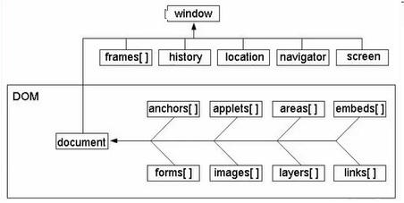

BOM概述
Browser Object Model，简称BOM，BOM由一系列对象构成，每个对象都提供了很多方法和属性，主要用于管理浏览器窗口，其核心对象是Window对象。

在JavaScript中，使用window引用Window对象，所有全局的变量都是Window对象的属性，使用全局函数都是Window对象的方法。
提示框：alert("内容")，没有返回值
选择框：confirm("提问的内容")，返回boolean
输入框：prompt("提示输入")，返回字符串或null
alert()等同于window.alert()
4.1、获取完整URL
Window对象的location属性引用的是Location对象，Document对象的location属性引用的也是Location对象
即：window.location===document.location，window.location的值为当前显示文档的URL
Document对象有一个URL属性，其保存该文档的URL静态字符串
如果定位到在本文档中，如URL#test,location属性会更新但URL属性不会更新
Location属性的href属性包含URL的完整文本，Location对象的toString()方法返回href属性值
使用window.location时，会隐式调用toString()方法，
即相当于window.location.toString()，window.location可代替window.location.href。
4.2、获取URL中的相关参数
Location对象的hash属性获取片段标识符部分，即#后面那部分
另一个属性search则获取查询字符串部分，即?部分
4.3、载入文档
4.3.1、刷新页面：location.reload();
4.3.2、前进式载入新页面（有历史记录）：location.assign(newURL)；
4.3.3、替代式载入新页面（无历史记录）：location.replace(newURL)；
4.3.4、传统粗暴法：location=newURL;
Window对象的history属性引用的是History对象，
window.open(newURL，wname)方法用于打开一个新窗口，并返回一个窗口对象，windowobj.close()方法只能关闭使用open方法打开的窗口。
onload、onscroll、onresize、onerror
例子：回到顶部按钮、侧边栏广告
Window对象的screen属性引用了Screen对象，其属性width和height可读取设备屏幕大小，属性availwidth和availheight可读取设备屏幕可用大小，排除了像任务栏之类的占用空间，单位是px。
Window对象的navigator属性引用了Navigator对象，常用于浏览器信息嗅探：window.navigator.userAgent
与时序相关的函数也是Window对象的内置方法，定时器的使用需要遵循先关后开的原则
3.1、循环定时器：
var timer=null;
//关闭定时器
clearInterval(timer);
//开启定时器
timer=setInterval(func,cycletime);//参数说明：func是一个函数，cycletime为时间，单位是毫秒
案例演示：开启定时器，区域背景颜色在红黄蓝三种颜色中循环切换
3.2、一次定时器（可以反悔）
开启：setTimeout(func,cycletime);
关闭：clearTimeout(timerObj);